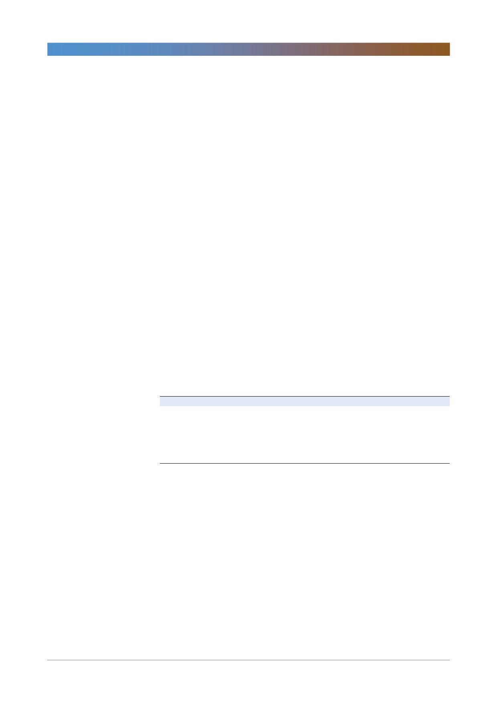

삼성중공업(010140)
해양 위기를 논하기에는 일러
삼성중공업이 입찰한 주요 해양 프로젝트는 쉐브론의 Rosebank FPSO(20억달
러), 나이지리아 Zabazaba FPSO(10억달러), 나이지리아 Bonga FPSO(10억달
러) 등이다. Zabazaba는 나이지리아 local contents 조항을 충족해야 한다. 삼성
중공업은 유일하게 나이지리아 현지 야드를 갖고 있는 조선사로, 별도의 local
contents 물량만 수주할 수도 있다.
올 들어 공들이던 Svedrup #2와 Rosebank를 연이어 실주하며 싱가폴/중국 조
선사에게 시장을 뺏길 수 있다는 위기의식이 고조되었다. 최근 주가 하락도 이를
반영했다고 보여진다. 싱가폴은 최근 말레이시아, 인도, 파키스탄 등 인근 국가의
저렴한 노동력을 집중 소싱하며 원가 경쟁력을 높이고 있음은 사실이다. 최근 싱
가폴은 조선업종에 종사하는 외국인 노동자에게 부과하는 추가분담금 인상을 1
년 더 유예하기로 했다. 또한 임금 인상분 일부를 정부에서 공동분담하는 ‘Wage
Credit Scheme’을 시행 중이다.
그러나 Rosebank의 숏리스트에 오른 싱가폴 Sembcorp Marine은 소규모 top
side 인도 경험은 있지만 hull side의 인도 경험은 없다. 또 다른 싱가폴 조선사
인 Keppel도 FPSO 개조만을 주로 해 왔다. 한국 조선사가 Johan Castberg나
Rosebank를 실주한 결정적 요인은 가격이었는데 싱가폴 조선사들은 관련 경험
이 없기에 오히려 공격적인 가격을 쓸 수 있는 반면, 한국 조선사들은 실적 충격
이후, 견적 과정이 좀더 정밀해지고 까다로워진 영향으로 판단된다.
<표 1> 싱가폴 Sembcorp Marine 해양 수주 실적
구분
프로젝트
MSV
Q7000
Drillship N/B Sembcorp Tanjong 11-1117
Drillship N/B Sembcorp Tanjong 11-1116
Hvy L/Crane Sleipnir
FPSO
Johan Castberg FPSO
FPSO
Karish/Tanin FPSO
자료: Clarksons, Sembcorp Marine, 한국투자증권
인도 시기
2018
2020
2020
2019
2022
2021
수주시기
발주처
2013 Helix Energy
2014
Transocean
2014
Transocean
2015 Heerema Marine
2017
Equinor
2018 Energean E&P
비고
Hull side (4.9 억달러)
Top side(2.9 억달러)
지금은 시황 회복 초입기에 나타나는 불편하지만 일시적인 현상으로 해석한다.
상선시장도 작년의 회복 초입기에는 중국 조선사들의 공세가 거셌다. 그러나 시
황 회복이 완연해지며 선주들은 좀더 안전한 조선사를 택하고 있고 이는 선가 상
승으로 이어지고 있다. 해양산업도 이 과정을 지나고 있다고 판단한다.
2